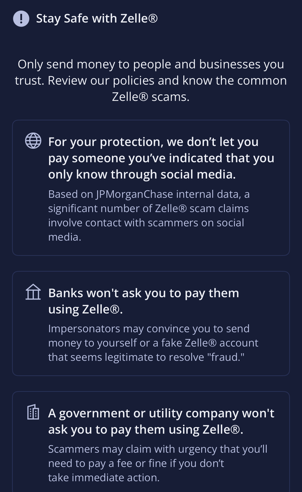

It starts with a text
It’s Tuesday afternoon and you receive a text message that appears to be from your bank. Did you just Zelle $750 to J. Morris? You hadn’t. So you say NO.
A few minutes later you receive a phone call. Your bank’s name shows on the caller ID. They say they are from the “fraud department.” Someone is trying to empty your account and you need to act fast, the person on the line tells you. They tell you how to log into your banking app and move it all to yourself so it’s safe while they lock everything down. They even know the last 4 digits of your card number.
So you send it. But the money just went to someone else's account, and it's gone for good. And it can get worse if you call your actual bank. You made the payment yourself, so the bank might not be liable to pay you back.
This really happens. Victims who spoke with ABC7 said scammers pretending to be their bank told them to Zelle money “to themselves.” The scary thing is that nothing was hacked. They did not have to.
US Bank Fraud Department Scam text and call
by u/Chronicles_of_mee in Scams
How Zelle actually sends your money

Zelle is not really an app like Venmo. It’s a payments network built into the banking apps of thousands of banks and credit unions.
It is operated by a company called Early Warning Services. Seven big banks own Early Warning Services: Bank of America, Capital One, JPMorgan Chase, PNC, Truist, U.S. Bank, and Wells Fargo.
Enter a phone number or email of who you want to send to, select an amount and hit send. In many cases, the money transfers from your account to theirs within minutes. There’s no waiting. No undo button.
The big security idea here is that push and pull payments aren’t the same. When you use your credit card, the store says to the card network, “take money from this person.” The network is in between. If something goes wrong you can contest the charge and have it refunded by the network. Zelle goes the opposite way. You instruct your bank to send the money. Once it’s in someone else’s account you have as much chance of getting it back as cash given to a stranger.
Where it breaks
A federal law that applies to electronic payments is called the Electronic Fund Transfer Act. Regulation E implements the Electronic Fund Transfer Act. It covers unauthorized transfers (someone else moving money). If you report one promptly, you are responsible for $50 at most within two business days or $500 within 60 days.
This is where it gets tricky. If you are hacked and money is taken out of your account without your permission, you are protected. But if you initiate it, banks have long considered it authorized even if you were tricked, and it is not protected by those safeguards. That’s the funny thing. If the scammer convinces you to share your login or a code sent to your phone, then sends the money himself, that’s unauthorized, the CFPB says. So depending on who actually presses the button, two different versions of the same scam are either covered or not covered.
And this is why the scam is structured the way it is from a security perspective. Bank logins are tough to crack because they’re protected by passwords, checks of the device you’re on and one-time codes. It’s a lot easier to get you to send the money for them. In security this is known as social engineering. The attacker tricks you into using, and thereby bypassing, your bank’s authentication.
After pressure from lawmakers, banks that operate Zelle started voluntarily refunding some imposter scams in mid-2023. This is only for scams where the scammer was impersonating a government agency, a bank or a company you already do business with. That’s a pretty big deal, because prior to this, a report by Senator Elizabeth Warren’s office found that only about 2% of imposter scam victims at four banks got their money back. But there are limits to the policy too. The criteria for a “qualifying” scam are not public, your bank decides if you qualify, and a Zelle representative told Checkbook that the policy doesn’t cover every imposter scam. It does not include purchase scams (e.g., buying concert tickets that never arrive).
The question of who pays the bill is still being fought out in the courts. The Consumer Financial Protection Bureau sued Early Warning and three of its owning banks in December 2024, saying their customers lost $870 million to fraud on Zelle. Then new leadership came in and dropped the case in March 2025. New York Attorney General Letitia James filed a similar lawsuit in August 2025, saying scammers stole more than $1 billion from Zelle users from 2017 to 2023 due to lax verification. A New York judge refused to dismiss the case in July 2026. Zelle said it plans to appeal, calling the suit politically motivated and adding that the vast majority of its transactions have no reports of fraud.
So why do you almost never get your money back in a Zelle scam? The law protects you from transfers that you did not initiate. The scam is to make you do the transfer yourself. The voluntary refund policy helps a little with the shortfall, but it is limited and your bank decides on a case by case basis. Zelle’s speed is great if you’re paying a friend back for pizza, but it also means a mistake usually can’t be undone.
Stay safe
- If “your bank” calls you, hang up and call the number on the back of your card. Caller ID can be spoofed.
- Your real bank would never ask you to shuffle money around to keep it safe. If someone tells you to “send it to yourself,” it is a scam.
- Never provide a one-time code to anyone, regardless of who they say they are. The codes they text you are essentially a key to your account.
- Only use Zelle with people you know and trust. And if you’re buying something from a stranger, use a credit card so you can dispute the charge if things go south.
- If it happens to you, act quickly. Immediately contact your bank and ask if your situation qualifies as an imposter scam as per Zelle’s policies. Then report it at ReportFraud.ftc.gov.
Bottom line: Zelle is only as secure as the person you're sending money to, so be sure you really know the person.
Sources
- ABC7 News: Victim of the Bank of America, Zelle scam? Here are your rights
- American Banker: NY AG sues Zelle for fraud after CFPB dropped similar suit
- Bankrate: What is Regulation E?
- NBC News: Zelle begins refunds for customers hurt by imposter scams
- CBS News: Zelle refunds for impostor scams
- Checkbook: Zelle improves its fraud protection policy, but is it enough?
- Payments Dive: CFPB drops fraud suit against Zelle and three banks
- Insurance Journal (Reuters): Judge says Zelle must face New York AG’s suit
This post is for general education, not legal or financial advice.